Connecting video...
Disconnected
00:00.000
00:00:00
T: 0.000 | S: 0.000
--ms
--dBm

--%

--%

0°
No GPS
0 km/h
Connecting...
Throttle
Steering
🎮 RT/LT=Gas/Brake LStick=Steer | ⌨️ WASD | Q=Assist E=Turbo H=Light C=Debug
🔧 Stability Debug
Throttle Pipeline
Input
TC
ESC
Slip
Final
Traction Control
Slip Detected—
Phase—
Multiplier—
Wheel Accel—
Vehicle Accel—
Slip Ratio—
Yaw Rate (ESC)
Intervention—
Multiplier—
Virtual Brake—
Yaw °/s
Desired
Actual
Desired—
Actual—
Error—
Slip Detection
0
Lateral Excess (m/s²)
Intervention—
Multiplier—
Steering Shaper
Limit—
Rate Limited—
Counter-Steer—
Assist Amount—
🔧 Assist Systems
ABS
ABS
ESC State
N
→
BRK
→
ARM
→
REV
Direction
⏹
stopped
Phase—
Slip Ratio—
Hill Hold
HOLD
0°
Pitch
Hold Force—
Blend—
Coast Control
Active—
Injection—
Surface Adaptation
Grip
0.70
Threshold ×—